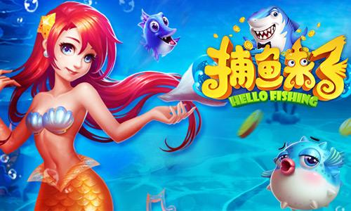
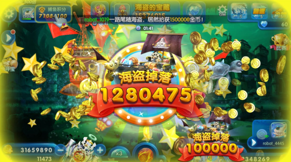
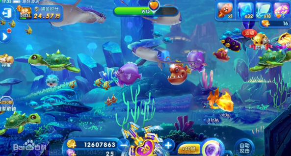

根据前面的分析，我们把一款捕鱼游戏运行的原理基本理顺了。假如我们单纯要表面运营一款捕鱼游戏，那么理解这些原理，再把握好玩家的留存和付费点，就基本可以对游戏进行基本把控。

但是，假如我们要从游戏设计的角度，进行更深层次的发掘分析，显然还是不够的。那么让我们进入核心的环节：玩家为什么要玩捕鱼游戏呢？对于其他的场景，又有哪些借鉴价值呢？
这里也先给出简单的回答：赌徒心态。
首先明确一个概念：什么是赌徒心态？当我玩一个有成本，有输赢的游戏时，输了还想再把输掉的赢回来，赢了还想继续赢下去，使自己的占有欲得到进一步的满足，这就是赌徒心态。这种心态在很多游戏中都会出现，尤其是博弈性质明显，成本和收益都比较可观的游戏。那么，什么是博弈？游戏的博弈性质，又从哪里体现呢？
博弈的定义是：拿有价值的东西做注码来赌输赢的行为。
这个词听起来有点可怕，但是，在我们生活中，这样的行为其实很常见。比如，今天我出门带伞，就需要付出成本：背包更加沉重，但假如下雨，我就可以享受到雨伞的遮挡，假如不下雨，我也不会有额外的损失，这也是一种很简单的博弈。然后，按照上面提到的赌徒心态，假如今天没下雨，即我输了，第二天我也依然可能会带伞来防止下雨，越输越赌。假如今天下雨了，我成功打了伞，即我赢了，第二天我也依然可能带伞，越赢越赌。

当然，这个下雨的事例不太恰当，因为是否下雨的可能性是能够通过天气预报看出来的。一些纯粹的概率事件，会把概率包装成黑箱，外界无法获知，则赌徒心态可以更明显体现出来。从这些事例可以看出来，什么样的博弈机制更吸引人呢？笔者认为，主要特点有：
1.低成本：成本不高，能够让玩家忽略每次损失；
2.公平性：输赢概率相对公平；
3.获利性：赌赢后可以获得明显实际利益；
4.炫耀性：赌赢后可以获得明显炫耀成本，心理满足感较强。
博弈机制越能够满足这几个条件，对赌徒的吸引力就会越大。下面针对捕鱼类游戏做具体分析。首先，谁在玩？捕鱼游戏的目标用户，一般趋向于中老年，大多是比较休闲，又比较爱好博弈的玩家。这些用户对casino类型的产品都比较欢迎，倾向于低成本获得刺激，又不会去学习过于复杂的游戏玩法。赌徒心态在每个人身上都有，但在他们身上就会更加明显。然后，玩什么？
捕鱼游戏的机制在上周推送的文章中已经介绍过了。可以发现，它满足低成本、公平性、获利性等几个原则，而剩余的一点炫耀性，则可以通过夸张的动画特效来实现：因此，捕鱼游戏往往自带夸张的赢钱特效。并且，为了强调低成本高收益，每一炮对金币的消耗往往比较隐蔽，效果不强。也就是说，很可能你开一炮就花费1000金币，然而打中了一条小鱼，奖励200金币，你还会感到自己赚了，进入“越赢越赌”的循环。

至于“越输越赌”，就更为常见了，因为玩家的总体收益往往是亏损的，但是当玩家想到赢钱时的夸张感受时，就会继续（充值）游戏。另外，捕鱼游戏的机制往往比较简单，没有复杂的难以理解的多余元素。这样的设计，可以将玩家精力吸引到主体机制上来，降低策略性，让玩家享受单纯的博弈玩法。综上所述，捕鱼游戏是一种非常单纯的博弈游戏机制。但是，想要运用好这种机制，是需要一定技巧的。
我自己的一大感受是：该产品倍率模式的数值体验，做得非常好。任务的数值梯度进行了细分，往往我在完成一个任务就想退出游戏时，发现下一个任务也将近完成了，把我留了下来，去完成下一个任务，这样环环相扣下去，完成了不少任务。其实任务奖励并不多，甚至可以说少得可怜，但是这样不断领奖，玩家的体验是非常好的，也充分利用了“越赢越赌”的心态。
同时，游戏中也包含许多“惊喜”，比如在倍率模式中会触发不少特殊鱼的小游戏，但这些小游戏核心都是围绕“博弈”和“点击”。例如，猜泡泡、擦玻璃的小游戏，都是纯粹的黑箱概率小游戏；而疯狂的河豚、疯狂的螃蟹等，则是训练玩家迅速点击屏幕的习惯，这些都和游戏主题相关度极高。
具体运营活动的事例，由于笔者这里也拿不到数据佐证分析，在此不做深入探究了。假如有兴趣，还是推荐下载游戏，自行体验。
上文介绍了博弈机制在捕鱼类游戏中的充分运用。那么，在其他类型的游戏中，是否也存在类似的设计呢？甚至，跳出游戏，在我们的日常生活中，是否也有呢？答案显然是肯定的。
最常见的MMORPG中，装备的强化精炼，往往就结合了概率问题。（友情提示：搜数值策划笔试题可以找到一大片哦^_^）其中的概率和期望，就可以理解为博弈机制。在这些游戏中，装备强化往往是提升战斗力的关键因素。
当你有了好的装备，当然会堆砌资本，提升装备属性啦，这也是玩家“稳扎稳打”数值积累的体现。和捕鱼类游戏不同的是，这里的成本是强化材料，而奖励是强化结果，是一个单向转化的过程。强化系统设计的目的，往往也是为玩家提供这样一个堆砌数值的途径，而不是主要为了减少玩家资产，因此，不会有捕鱼游戏的层层概率把控，相反，还会很良心地设置一些保底机制，防止玩家失望。
本文从捕鱼游戏的基本机制出发，推演了一些相关数值，最终落脚到博弈机制和赌徒心态的原理分析。当你掌握了这种分析思路，尤其是对赌徒心态有了深刻的理解，就会更容易明白捕鱼游戏的玄机：玩家的成本和收益都是游戏金币，成功概率由黑箱内部机制决定。
玩家相信自己能赢，并且他很享受这种赢的价值，所以他会坚持投入时间、金钱、精力等成本来进行游戏。而开发者在维持游戏平衡运作的同时，鼓励玩家的这种想法，从而赚取利益。现实生活中，当我们缺乏动力的时候，也不妨利用这种“赌徒心态”来鼓励自己。规划清楚自己付出的成本和可能得到的收获，有助于我们更好地行动。
如果你认为某项行为，其收获对你而言极其重要，那么你就去不断尝试。假如女神跟高富帅男友走了，但你仍相信她会属于你，默默做着备胎，兴许哪天她在换了N个男朋友后，就想起你来了呢？（并不）所谓的“爱拼才会赢”，也是基于很好的自我激励实现的。纹桃科技致力于捕鱼游戏开发15年，拥有大量捕鱼游戏成功案例。
想开发一款迅速盈利的捕鱼游戏，欢迎咨询热线电话：18711739336

扫码二维码咨询更多捕鱼游戏问题

游戏产品
PRODUCTS

售后服务
SERVICE

技术支持
TECHNOLOGY

运营指导
OPERATING